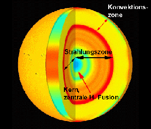

Die Sonne ist ein durchschnittlich großer Stern und befindet sich im äußeren Drittel der Milchstraße. Nur durch sie können wir überhaupt auf der Erde leben, da sie uns die nötige Temperatur, die unser Körper benötigt gibt und uns natürlich auch ihr Licht schenkt. Sie ist 4,6 Millionen jahre alt. Die Sonne ist 149.600.000km von unserer Erde entfernt, was ziemlich wenig für einen Stern ist, deshalb kommt sie uns auch viel Größer vor als alle anderen Sterne , obwohl sie eine gewöhnliche Größe
für einen Stern hat. Sie ist 1000 mal schwerer, als alle Planeten des Sonnensystems zusammen. Ihr Radius beträgt 695.700 km, also einen Durchmesser von 1,4 Millionen km.Außerdem hat sie die 330 000fache
Erdmasse. Die Sonne besteht aus Wasserstoff und Helium und ist also eine große Gaskugel. Die Sonne ist 5500 Grad heiß und alleine die Erde trifft eine Strahlungsleistungsleistung von 1,37 Kilowatt
pro Quadratmeter. Die Energiequelle der Sonne ist die Fusion von Wasserstoffkernen zu einem Heliumkern und es werden pro Sekunde im Inneren der Sonne 600 Megatonnen Helium aus Wasserstoff produziert. Dabei hat die Sonne eine sehr hohe Temperatur
im Zentrum von 15 Millionen Kelvin. Beim Beobachten der Sonne scheint es manchmal, als hätte sie Flecken auf ihrer Oberfläche - mal mehr, mal weniger. Das sind die so genannten Sonnenflecken. An diesen Stellen ist die Oberfläche der Sonne kühler.
Dadurch strahlen diese Stellen nicht so viel Licht ab wie der Rest und sehen fast schwarz aus. Der ungeschützte Blick zur Sonne mit einem optischem Instrument wie Fernglas kann gefährlich enden, da sie 15 Milliarden mal heller, als der
zweit Größte Stern an unserem Himmel ist. Da die Sonne keine feste Kugel ist, sondern aus Gas besteht, dreht sie sich unterschiedlich schnell um ihre Achse. Am Äquator dauert eine Umdrehung ungefähr 25 Tage und an den Polen ungefähr 30 Tage.
 Die Sonne hat mehrere Schichten, genau wie unsere Erde . Diese kannst du in der nebenstehenden Grafik erkennen. Die hier gelbe,obere Schicht, welche auch die Größte ist wir "Konvektionszone" genannt und die hier rote, orgagene , mintfarbene und grüne Schicht, bilden zusammen die Strahlungszone. Die Strahlungszone füht bis zu dem Kern der Sonne, welcher mit turkis-blau in der Grafik zu erkennen ist. Dieser Kern wird auch zentrale H-Fusion gennant und dort herrscht eine Temperatur von 15 Millionen Kelvin.
| Sonne | Daten |
|---|---|
| Art | Stern |
| Alter | 4,6 Milliarden Jahre |
| Gewicht | 100 mal schwerer als alle Planeten des Sonnensystems zusammen |
| Durchmesser | 1,4 Millionen km |
| Masse | 333.000-fache Erdmasse = 99,9% der Gesamtmasse im Sonnensystem |
| Bestandteile | Wasserstoff und Helium |
| Temperatur | 5500° |
| Temperatur im Zentrum | 15 Millionen Kelvin |
| Entfernung von der Erde | 363.300 km- 405.500 km |
| Rotation | Eine Umdrehung am Äquator dauert ca. 25 Tage |
© 2006, Sonne
Alle Warenzeichen und registrierten Warenzeichen, die auf dieser Site erscheinen, sind Eigentum ihrer jeweiligen Halter.